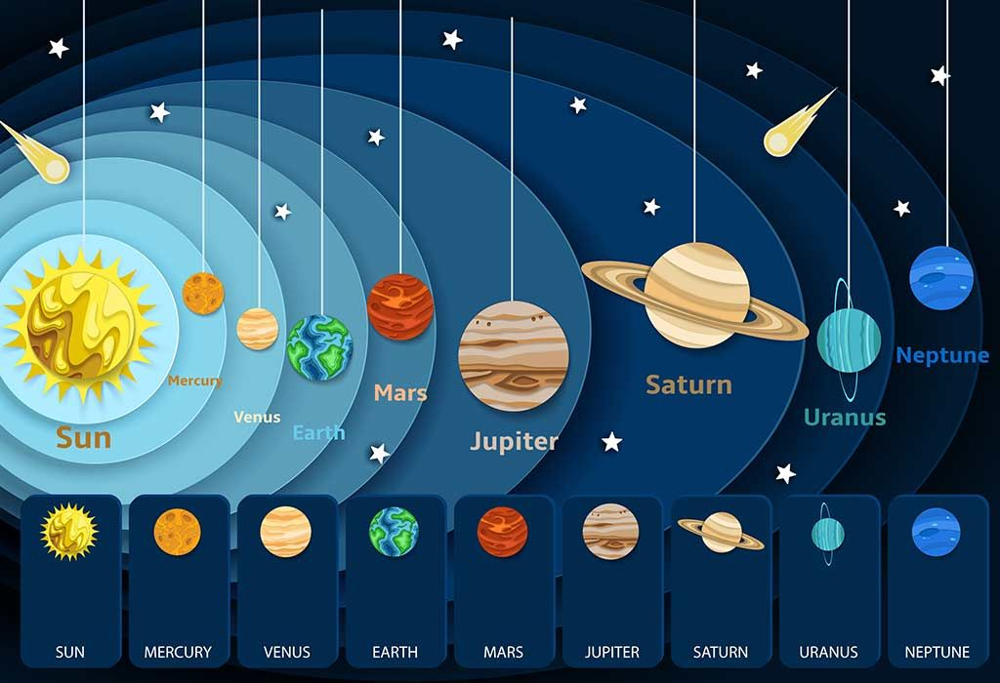

☀️ Sun
The Sun is a massive star at the center of our solar
system.
🪙 Mercury
Mercury is the smallest planet and closest to the Sun.
🔥 Venus
Venus is extremely hot with a thick, toxic atmosphere.
🌍 Earth
Earth is our home and the only known planet to support
life.
🔴 Mars
Mars is the Red Planet, possibly once home to life.
🌀 Jupiter
Jupiter is the largest planet, with powerful storms like the Great Red
Spot.
💍 Saturn
Saturn is known for its beautiful and extensive ring
system.
🔵 Uranus
Uranus rotates on its side and appears pale blue.
🌊 Neptune
Neptune is deep blue with some of the fastest winds in the solar
system.